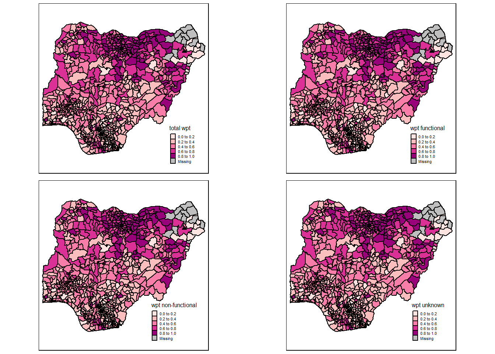

pacman::p_load(sf, tidyverse, tmap, spdep, funModeling)Regionalisation of Nigeria Water Level
Take-home exercise 2
Dec 3, 2022 Take-home exercise 2
Overview
Setting the Scene
The process of creating regions is called regionalisation. A regionalisation is a special kind of clustering where the objective is to group observations which are similar in their statistical attributes, but also in their spatial location. In this sense, regionalization embeds the same logic as standard clustering techniques, but also applies a series of geographical constraints. Often, these constraints relate to connectivity: two candidates can only be grouped together in the same region if there exists a path from one member to another member that never leaves the region. These paths often model the spatial relationships in the data, such as contiguity or proximity. However, connectivity does not always need to hold for all regions, and in certain contexts it makes sense to relax connectivity or to impose different types of geographic constraints.
Objectives
In this take-home exercise you are required to regionalise Nigeria by using, but not limited to the following measures:
Total number of functional water points
Total number of nonfunctional water points
Percentage of functional water points
Percentage of non-functional water points
Percentage of main water point technology (i.e. Hand Pump)
Percentage of usage capacity (i.e. < 1000, >=1000)
Percentage of rural water points
The Data
Apstial data
For the purpose of this assignment, data from WPdx Global Data Repositories will be used. There are two versions of the data. They are: WPdx-Basic and WPdx+. You are required to use WPdx+ data set.
Geospatial data
Nigeria Level-2 Administrative Boundary (also known as Local Government Area) polygon features GIS data will be used in this take-home exercise. The data can be downloaded either from The Humanitarian Data Exchange portal or geoBoundaries.
The Task
The specific tasks of this take-home exercise are as follows:
Using appropriate sf method, import the shapefile into R and save it in a simple feature data frame format. Note that there are three Projected Coordinate Systems of Nigeria, they are: EPSG: 26391, 26392, and 26303. You can use any one of them.
Using appropriate tidyr and dplyr methods, derive the proportion of functional and non-functional water point at LGA level (i.e. ADM2).
Combining the geospatial and aspatial data frame into simple feature data frame.
Delineating water point measures functional regions by using conventional hierarchical clustering.
Delineating water point measures functional regions by using spatially constrained clustering algorithms.
Thematic Mapping
- Plot to show the water points measures derived by using appropriate statistical graphics and choropleth mapping technique.
Analytical Mapping
- Plot functional regions delineated by using both non-spatially constrained and spatially constrained clustering algorithms.
Getting Started
Importing Data into R
nga_wp <- read_rds("data/geospatial/nga_wp.rds")Visualising the spatial dsitribution of water points
total <- qtm(nga_wp, fill = "pct_functional", fill.palette = "RdPu", fill.title = "total wpt", borders = "black", title = "") + tm_legend(legend.height = 0.25)
wp_functional <- qtm(nga_wp, fill = "pct_functional", fill.palette = "RdPu", fill.title = "wpt functional", borders = "black", title = "") + tm_legend(legend.height = 0.25)
wp_nonfunctional <- qtm(nga_wp, fill = "pct_functional", fill.palette = "RdPu", fill.title = "wpt non-functional", borders = "black", title = "") + tm_legend(legend.height = 0.25)
unknown <- qtm(nga_wp, fill = "pct_functional", fill.palette = "RdPu", fill.title = "wpt unknown", borders = "black", title = "") + tm_legend(legend.height = 0.25)
tmap_arrange(total, wp_functional, wp_nonfunctional, unknown, asp=1, ncol=2)